1. DDL相关
a.
-- 查询所有数据库
show databases;
-- 删除数据库
drop database ladeng;
b.
-- use `数据库名称`; 表示使用此数据库
use ladeng;c.
-- 查看表结构
show create table student;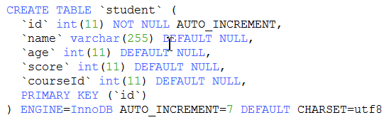
d. 往表中添加新字段
ALTER TABLE `report_user_manage` ADD is_delete tinyint(2) NOT NULL COMMENT '是否删除 0-未删除 1-已删除';
ALTER TABLE `report_user_manage` ADD creator varchar(50) NOT NULL COMMENT '创建人';
ALTER TABLE `report_user_manage` ADD gmt_create datetime NOT NULL COMMENT '创建时间';
-- 当数据新插入时更新时间默认为null, 当数据修改时更新时间会自动变化
ALTER TABLE `report_user_manage` ADD gmt_modified datetime DEFAULT NULL ON UPDATE CURRENT_TIMESTAMP COMMENT '更新时间';e
-- 如果源字段值是其它类型如:vachar且有值, 修改为新字段bigint类型,则会报报,需要先清空这个字段值才能修改字段名称; 如果源字段值都为null或者类型也为bigint则直接修改不会报错
ALTER TABLE 表名 CHANGE `源字段名称` `目标字段名称` bigint(20) DEFAULT NULL COMMENT '逾期已还用户数';f.
-- 删除表
drop table 表名
2. 查询表总共有多少条数据, 一般有如下3中写法, 推荐优先使用 count(1) 或 count(id)
-- count(1):性能高
select count(1) from student;
-- count(带索引的字段):性能高, count(未带索引的字段):性能一般, count(字段)时需要注意,如果该字段值存在有null则统计有误差.select count(字段名称) from student; 如: select count(id) from student; -- count(*): * 会扫描所有列,故性能比前面几种低 select count(*) from student;3. 单条插入
-- 如果选中了数据库则数据库名称可以省略;
-- 如果数据库名称或表名称是中文名或者字段名称是关键字，则尽量加上 `` 包裹起来
-- 如果id是自增,则id默认一般不能插入，除非自己修改数据库配置允许插入id;
-- 所有字段值都可以用单引号包围, 如果字段类型不是varchar类型,也能使用''包裹字段值, 底层做了类型强制转换成varchar
INSERT INTO 数据库名称.表名称 (字段名称1, 字段名称2) VALUES('字段1值', '字段2值');
INSERT INTO `ladeng`.`student` (`name`, `age`, `score`, `courseId`) VALUES ('小明', '19', '100', '3');4. 批量插入(批量插入条数看插入的字段个数和字段值的字符数, 方式一: 推荐500-5000条, 方式二推荐: 100-1000条, 避免内存占用过高)
-- 方式一(多条插入语句中间用分号; 分隔): 如: 下面这2条同时执行
INSERT INTO `ladeng`.`student` (`name`, `age`, `score`, `courseId`) VALUES ('小红', '18', '15', '3');
INSERT INTO `ladeng`.`student` (`name`, `age`, `score`, `courseId`) VALUES ('小丽', '22', '25', '3');
-- 方式二: values后面跟多条数据，中间用顿号、分隔
INSERT INTO `ladeng`.`student` (`name`, `age`, `score`, `courseId`) VALUES ('小红', '18', '15', '3'),('小丽', '22', '25', '3');5. 单条更新语句
UPDATE `ladeng`.`student` SET `score`='79', age = 19 WHERE `id` = '1';6. 批量更新语句: 参照批量插入的第一种方式
7. 删除语句
delete from student where id in (14, 15);-- 方式一: 删除表中所有数据,(会记录删除日志,可根据日志恢复, 删除后id不会重置为0)
delete from 表名
-- 方式二: 删除表中所有数据:(不会记录删除日志,不能恢复, 删除后id会重置为0, 原理类似于删除表,然后再创建表,性能高)
truncate table 表名;8. between ... and ... 在什么之间, 如: 查询年龄>= 19并且年龄<=22数据
select * from student where age between 19 and 22 等价于
select * from student where age >=19 and age <= 22 9. 聚焦函数(count, sum,avg, max, min, group by), 将多行数据聚焦成一个值
-- 查询总条数, 如果不存在id>2的数据则count(1)会返回0,而不是返回null
select count(1) from student where id > 2
-- 查询所有学生所有科目总分数, 如果表中没有数据则sum(score)会返回null，而不是返回0
select sum(score) from student
-- 查询所有学生所有科目总分数, 如果没有数据就默认返回0; ifNull是用来判断是否为空,为空则赋值一个默认值
select ifNull(sum(score), 0) from student
-- 查询每个学生所有科目分数, 按照学生名字分组; group by 作用是分组,如果需要对多个字段分组，则 group by 字段1,字段2,...
select `name`, sum(score) from student group by `name`;10. sql中的3种判断语句
下面那些sql执行的结果都等于这张图片
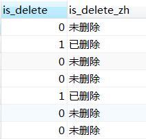
第一种用法(推荐使用这种,没有局限性,): case when 条件表达式1 then 值1 when 条件表达式2 then 值2 ... else 默认值 end as `字段别名`
-- 这3条sql意思都一样,结果如下图 (else可以省略); 等价于java中的if语句
select
is_delete,
case
when is_delete = 0 then '未删除'
else '已删除'
end as is_delete_zh
from student
select
is_delete,
case
when is_delete = 0 then '未删除'
when is_delete = 1 then '已删除'
end as is_delete_zh
from student
select
is_delete,
case
when is_delete = 0 then '未删除'
when is_delete = 1 then '已删除'
else '' end as is_delete_zh
from student 第二种用法;
-- 这2条sql意思一样，结果如下图(else可以省略); 等价于java中的 switch语句
select
is_delete,
case is_delete
when 0 then '未删除'
when 1 then '已删除'
end as is_delete_zh
from student
-- 等价于java中的 switch语句.
select
is_delete,
case is_delete
when 0 then '未删除'
else '已删除'
end as is_delete_zh
from student 第三种用法:
-- 等价于java中的三目运算符
select is_delete, if(is_delete = 0, '未删除', '已删除') as is_delete_zh from student;11. 连表查询
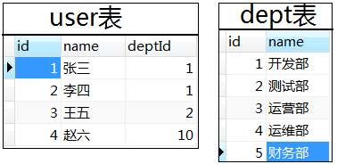
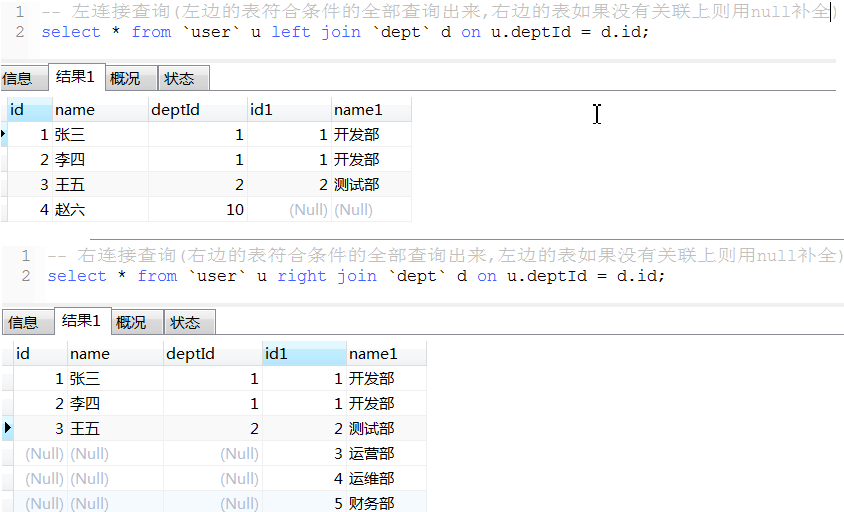
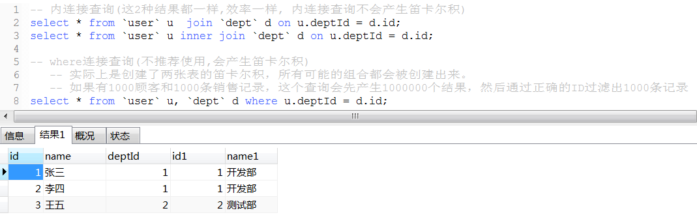
性能比较: 内连接查询 > left join 或 right join > where连接查询(产生笛卡尔积,耗资源,性能很低)
内连接查询性能与left join接近, 数据量很大时且很多数据关联字段没有关联上时, 内连接性能会高一点,
因为连接查询的结果会写入到一个结果集中, 内连接后的数据量少占用内存小执行效率快,且内连接写入的数据量小会节约时间如果是多表(3张或以上)连接查询则过滤数据量的条件放在on 后面比放在where条件性能更高;
如: select a.* from a left join b on a.time > '..' and a.bid = b.id
left join c on c.id = b.cid where ...;
12. DATE_FORMAT语法(日期格式化)
select createTime,DATE_FORMAT(createTime, '%Y-%m-%d'),DATE_FORMAT(createTime, '%Y-%m-%d %H:%i:%s') from user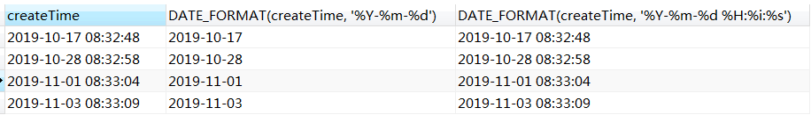
| 格式 | 描述 |
|---|---|
| %a | 缩写星期名 |
| %b | 缩写月名 |
| %c | 月，数值 |
| %D | 带有英文前缀的月中的天 |
| %d | 月的天，数值(00-31) |
| %e | 月的天，数值(0-31) |
| %f | 微秒 |
| %H | 小时 (00-23) |
| %h | 小时 (01-12) |
| %I | 小时 (01-12) |
| %i | 分钟，数值(00-59) |
| %j | 年的天 (001-366) |
| %k | 小时 (0-23) |
| %l | 小时 (1-12) |
| %M | 月名 |
| %m | 月，数值(00-12) |
| %p | AM 或 PM |
| %r | 时间，12-小时（hh:mm:ss AM 或 PM） |
| %S | 秒(00-59) |
| %s | 秒(00-59) |
| %T | 时间, 24-小时 (hh:mm:ss) |
| %U | 周 (00-53) 星期日是一周的第一天 |
| %u | 周 (00-53) 星期一是一周的第一天 |
| %V | 周 (01-53) 星期日是一周的第一天，与 %X 使用 |
| %v | 周 (01-53) 星期一是一周的第一天，与 %x 使用 |
| %W | 星期名 |
| %w | 周的天 （0=星期日, 6=星期六） |
| %X | 年，其中的星期日是周的第一天，4 位，与 %V 使用 |
| %x | 年，其中的星期一是周的第一天，4 位，与 %v 使用 |
| %Y | 年，4 位 |
| %y | 年，2 位 |
12. 拼接字符
a. concat_ws用法
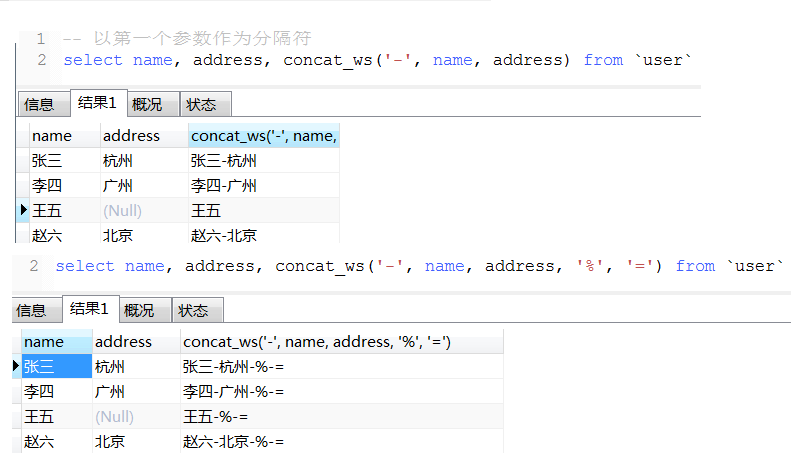
b. concat用法(如果有一个参数值为null则拼接后的结果为null)
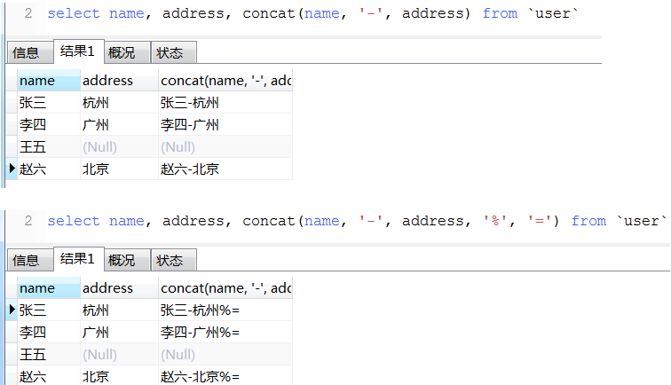
c. concat_group用法
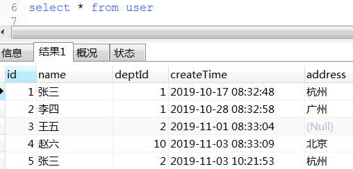
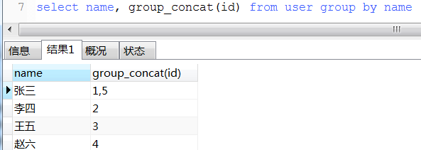
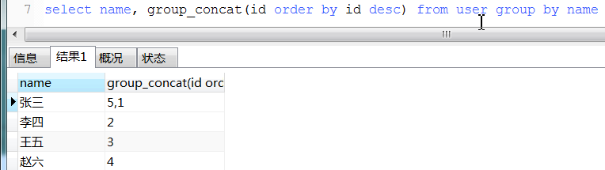
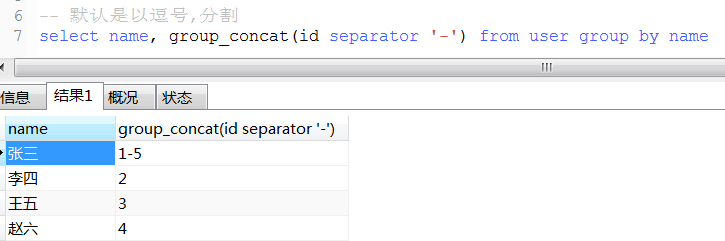
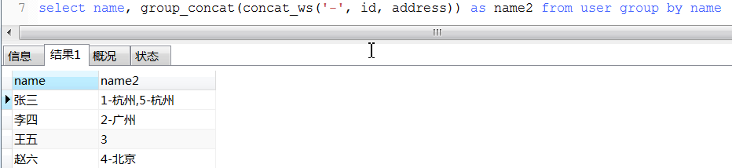
13. round用法
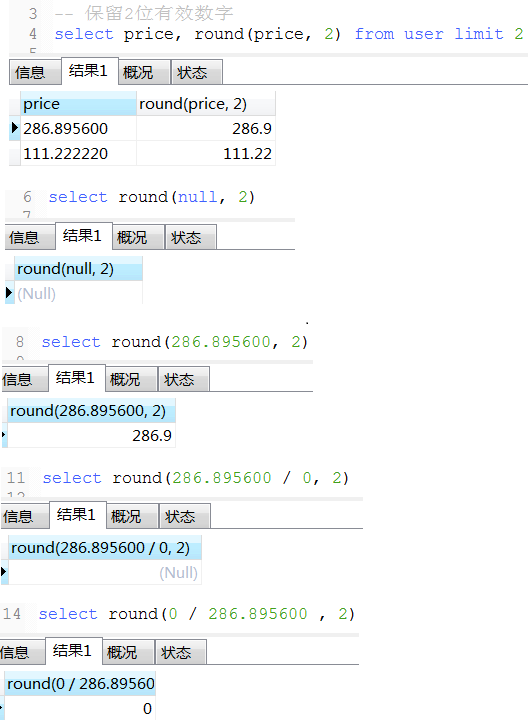
项目中一个保留2位小数百分比例子(仅供参考), 如果是数字类型,小数点后面末尾的零会自动省略掉,故需要转换成varchar 如: 0.00% 或 100.00% 或 91.67%
concat_ws('', ifNull(round(ifNull(sum(if(credit_apply_status = 0, 1, 0)), 0) / count(1), 2) * 100, '0.00'), '%') as creditPassScale另一个经典案例
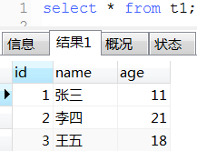
select concat_ws('', 'insert into t2 (name, age) values(', '\'', name, '\',', age, ');') as batchInsertSql from t1;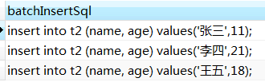
14. distinct去重, 和 group by分组有点类似
select distinct name from user-- 查询用户数
select count(distinct name) from user15. like模糊查询用法, 和mysql中的正则表达式功能类似
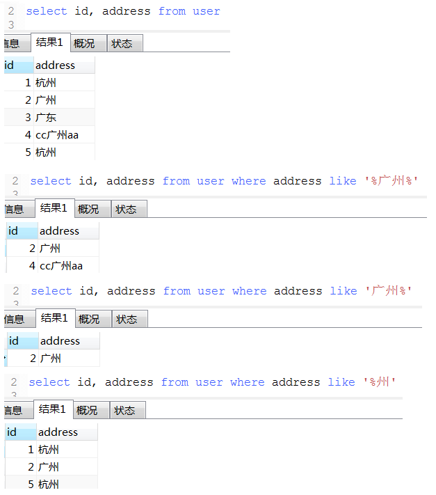
16. in语法(in的参数个数最好越少越好, 个数超过2000个很容易出问题)
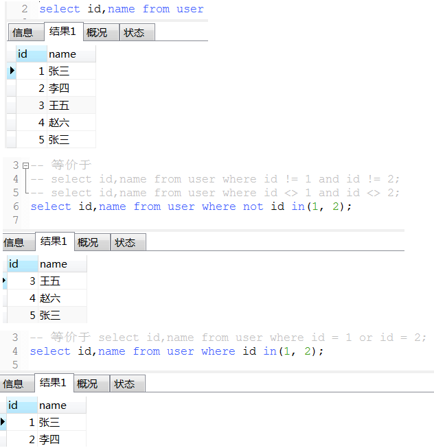
17. 优先级: where > group by > having > order by > limit
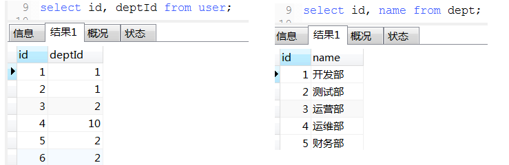
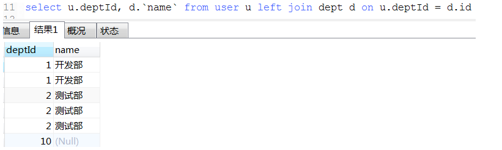
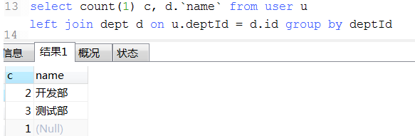
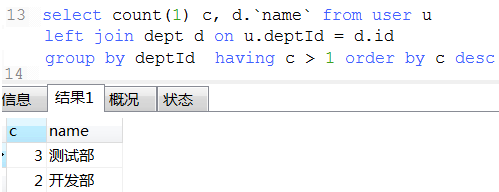
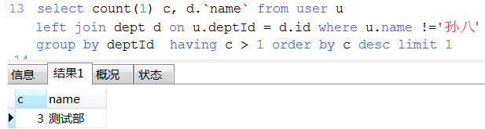
18. 数据统计经典例子(这种可以将不同条件统计查询用一条sql查询出来)
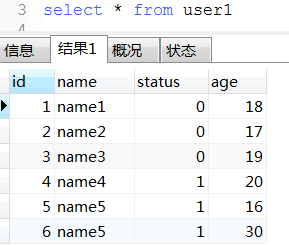
select
ifNull(sum(case when status = 0 and age >= 18 then 1 else 0 end), 0) as '成年人未删除总数'
, ifNull(sum(case when status = 0 and age < 18 then 1 else 0 end), 0) as '未年人未删除总数'
, ifNull(sum(case when status = 1 and age >= 18 then 1 else 0 end), 0) as '成年人已删除总数'
, ifNull(sum(case when status = 1 and age < 18 then 1 else 0 end), 0) as '未年人已删除总数'
from user1 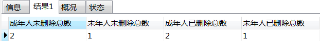
19. 去重经典案例(这种对于一张表中有多条数据相同, 保留最大id或最小id那条数据很适用)
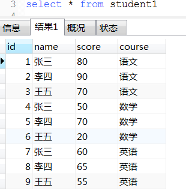
-- 每个科目前2名学生和分数
select s1.* from student1 s1 where
(select count(1) from student1 s2 where s1.course = s2.course and s1.score < s2.score) < 2
order by s1.course, s1.score desc;
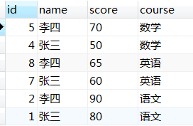
20. union(性能比union all低)和union all用法
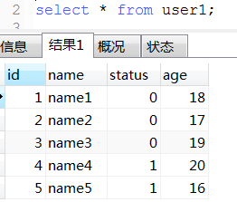
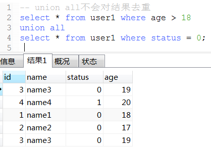
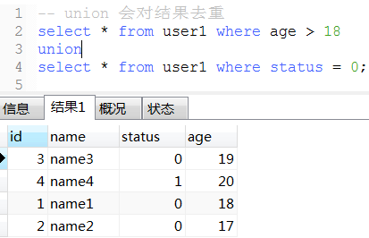
21. 将表数据复制到另一张表
a. 新表之前存在
-- 将t1表数据插入到t2表中(t2表原本已经存在,如果不存在则会报错)
insert into t2 (username, age) select name,age from t1
-- 如果表t2是新建的一张表,并且从未插入过数据(如果之前插入过数据则会报id重复无法插入错误),则上面那条sql可以简写为:
insert into t2 select * from t1 b. 新表之前不存在
-- 将t1表复制一份改名为tt3,但是主键及自增以及索引等都会消失,复制不过去;数据会复制过去
create table tt3 select * from t1; 22. exist用法
-- 下面那3条语exists语句类似于java的
List<Object> list结果集 = new ArrayList<>();
for (Object a list1) {
for (Object b list2) {
if (条件) {
list结果集.add(a);
break;
}
}
}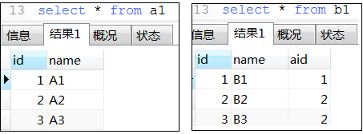
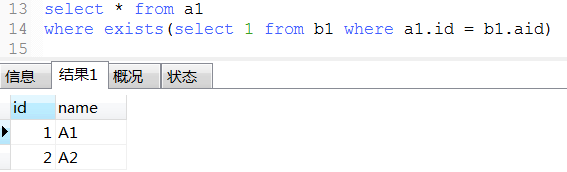
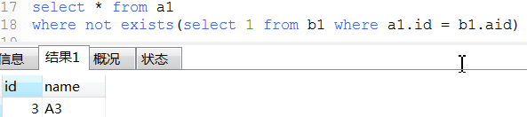
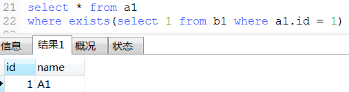
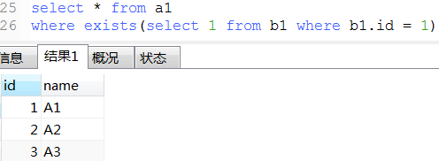
23. mysql常用的系统表
a. 从系统表获取列字段信息
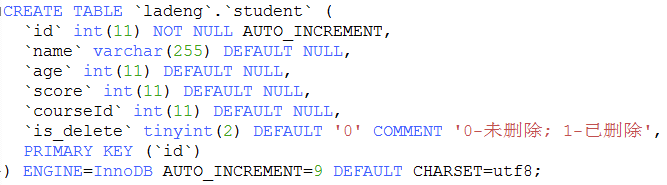
select
table_schema, table_name, column_name, column_default, is_nullable
, data_type, character_maximum_length, character_set_name
, column_type, column_key, extra, column_comment
from information_schema.columns where table_schema='ladeng' and table_name= 'student'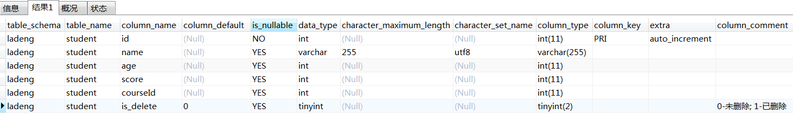
b.
-- 查询一个数据库下所有的表信息
select * from information_schema.TABLES where TABLE_SCHEMA = 'ladeng'c.
-- 查询一个数据库服务器下所有的数据库信息
select * from information_schema.SCHEMATA
24. 存储过程
25. mysql正则表达式
26. 视图